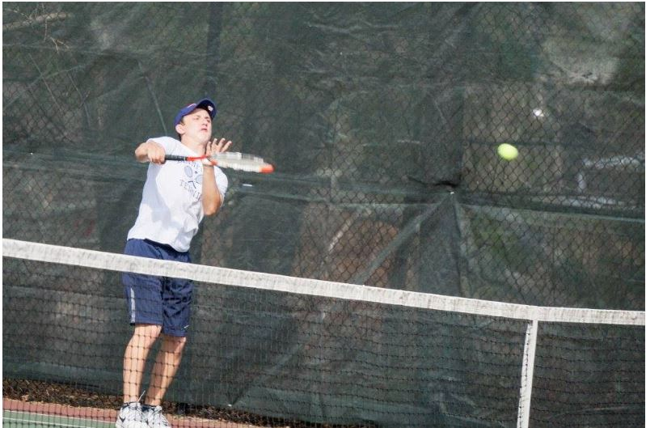

NICKNAME: DANNY MUSCLES, BRUNCH
HOMETOWN: LYNNFIELD, MA
PAST TEAMS: LYNNFIELD HIGH FOOTBALL

Many theorize that Bronshvayg is from a land where Brunch is the most important meal of the day and they make good teammates on trees. He's currently on pace to average more high fives than Brian Scalebrine in his record setting season.
Some say that Young Brunch is a glitch in the matrix, a carbon-copy of Produce, an assassin meant to take his place in the team (this theory is founded in the fact that they are both named Daniel and that both of their nicknames are food).
However, the Apple never falls from the tree and Danny hails from a sleepy Massachusetts town before setting his aim on the Somerville Boys and Girls Club Ultimate Frisbee team. He set down his football to pick up a frisbee and dropped his saxophone and learned how to play zone defense.
His hobbies include living uphill, wearing great costumes and showing people his high school football teams' highlight video.